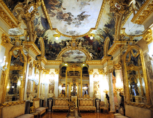

El Museo Cerralbo es uno de los escasos ejemplos en Madrid que muestra en sus salas la ambientación decorativa original propia de una residencia aristocrática de fines del XIX, minuciosamente recuperada en la primera década del siglo XXI. Está tarea fue reconocida con una medalla del Premio de Unión Europea de Patrimonio Cultural 2008.
El Museo ofrece además una amplio un programa de actividades culturalesNueva ventana que persigue dar a conocer las colecciones y el legado cultural de la época en la que nació, bajo los auspicios del XVII marqués de Cerralbo (1845-1922), al tiempo que hace extensiva su labor a las manifestaciones artísticas contemporáneas.
El Museo Cerralbo es un museo singular, denominado «de ambiente», pues mantiene casi intacta su estética de época, con una acumulación de muebles, antigüedades y pinturas. De hecho, el mismo edificio —de influencia puramente italiana—, se proyectó más como galería visitable y escenario de fiestas, que como residencia propiamente dicha. El marqués pasaba gran parte del tiempo fuera de Madrid, viajando por Europa, de modo que pensó este palacio no como su hogar habitual, sino como sede de sus colecciones, donde pudiese organizar fiestas y recibir visitas cuando acudía a Madrid. Se cuenta que, residiendo en Biarritz, remitía a Madrid los planos e indicaciones para construir el palacio, lo cual dificultaba la labor del arquitecto Sureda y dio como resultado algunos errores o incongruencias en la distribución de las salas.
Al tratarse de una mansión más enfocada a la exhibición y ostentación que al uso cotidiano, se proyectaron amplios salones para las colecciones más relevantes y se destinaron espacios reducidos para la vida diaria. Actualmente se conserva casi íntegra la decoración de la planta principal —que incluye, entre otros, un suntuoso salón de baile—, mientras que las estancias más privadas sufrieron sucesivos cambios por el uso. Han sido finalmente recuperadas con su mobiliario original y otras antigüedades adquiridas en fecha reciente.
El Museo Cerralbo guarda similitudes con el Museo Lázaro Galdiano, sito también en Madrid, aunque sus contenidos se formaron en épocas y circunstancias diferentes; la colección del marqués de Cerralbo es anterior y, de hecho, se consideraba la más valiosa de su época. Esta institución se singulariza por conservarse como casa-museo y reflejo de una época, mientras que el Museo Lázaro Galdiano ha sido reformado y reordenado varias veces, y de forma mucho menos respetuosa con su aspecto original.
